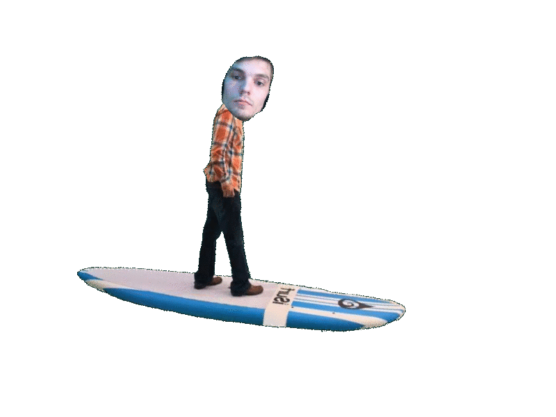
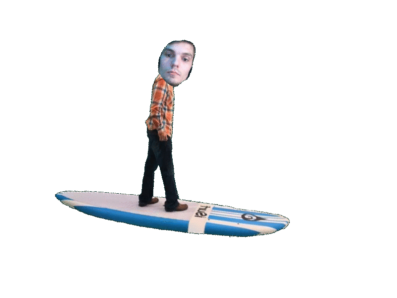
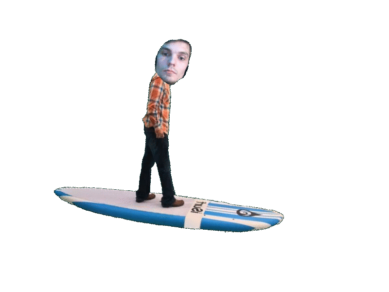

Well, we don't know too much about Wild Klyde's adventures, outside of the amazing streams they have on Twitch.
But here's what we do know. Klyde ██████, known on Twitch as Wild Klyde, Cyanide_Klyde, or just Klyde, streams
him playing games, talking to viewers, everything you could want from a Klyde!

Testing..


 
